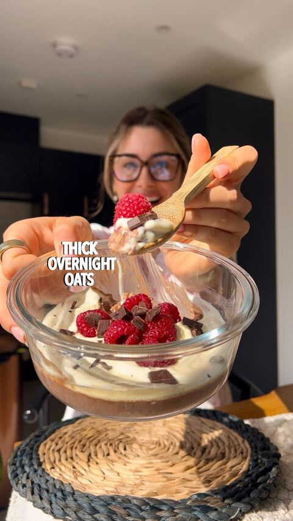

📖 Alle Rezepte mit Bild & Anleitung → · 🛒 Einkaufsliste 6 Tage →
Statt 5× dasselbe Glas: zwei kleine Prep-Runden. Dann ist nichts älter als 3 Tage – das löst auch das Haltbarkeitsproblem von Tag 5.
Alles mit Bananenscheiben oder fertig geschichteten Beeren + Joghurt wird nach 3 Tagen braun bzw. matschig → zuerst essen.
Kein frisches Obst im Glas (Topping erst morgens), die Bueno-Schokodecke versiegelt sogar → verzeiht Wartezeit, ideal für die zweite Runde.
Bei „nachgebaut" verschickt die Erstellerin das Rezept nur per DM. Die Mengen hier sind aus Video-Bild, Beschreibung und ihrem Grundrezept (Schoko Oats) abgeleitet – schmeckt, ist aber nicht 1:1 ihr Original.